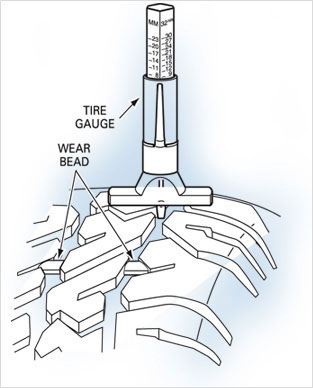

TYRES HEADING
Visit your local Quick Lane for an outstanding selection of major tire brands. The experts are ready to answer your questions about the right tires for your needs. Just looking for a quick tire rotation or tire inspection? Stop by. No appointment necessary.
Text LinkThe Low Price Tyre Guarantee
We'll beat any price on the 13 major tire brands we sell. Guaranteed!
Learn MoreTHREE COLUMN IMAGES
When To Buy New Tires
All it takes is a penny! Put one upside down in your tire’s tread grooves. Put a penny in several locations since your tires may display inconsistent wear patterns that lead to premature wear.
It’s a smart idea to inspect your four primary tires and spare tire once a month.
If Lincoln’s hair is visible, the tread has worn to less than 2/32 of an inch. Use a tire depth gauge to give you a better indicator of how much tread you have left. It is strongly recommended that you replace your tires when the tread has worn to between 2/32 or an inch and 4/32 (using a quarter instead of a penny with Washington’s scalp visible). Punctures, cuts or snags in your tire tread or sidewall could also signal that it’s time to replace.
The more tread on your tires, the more control you’ll have – especially in wet road conditions – and the shorter the distance required to stop your vehicle when braking.
Need advice about whether it’s time to replace your tires? The factory-trained experts at your local Quick Lane® are Ready to ServeTM
Spotting uneven and irregular tire wear patterns.
With regular driving, tires inevitably wear out. But some types of wear are premature and the result of improper tire inflation and external factors. Your Quick Lane expert can point out any unusual wear patterns on your tires and show you how to how to fix the problem.
Toe Wear
Out of alignment - thin inner or outer edge
Camber Wear
Out of alignment - exaggerated inner or outer edge wear
Center Wear
Overinflation - thin tread wear in center of tire
Toe Wear
Under-inflation - thin tread wear along tire edges
Types of Tires
Broad Market Passenger
This is the most common type of tire and features long tread life and a quiet, smooth ride. Other attributes include:
- All-season traction
- High aspect ratios (tire height), which means a softer ride
- Passenger car, SUV and light truck applications

Performance/Touring
This tire combines the characteristics of performance tires with the long mileage and smooth ride of a broad market passenger tire. Features include:
- Higher speed ratings than broad market passenger tires
- Medium aspect ratio (tire height), resulting in a combination of performance and ride comfort
- Passenger and luxury car applications
High Performance
Not a tire for the masses. This type of tire is designed for enhanced handling under demanding circumstances. Tire highlights:
- Typically uses "Z" or "ZR" in size description
- Highest speed ratings
- Low aspect ratio (tire height) for enhanced control
- Sports car and high-performance sedan applications
Light Truck
Light trucks are designed to carry cargo. These tires are designed to support higher loads, and include:
- "LT" designation followed by size
- Requires higher tire pressure compared to passenger tires
- Load index designated by alpha character, typically "C" through "G"
- SUVS, van and light truck applications


Protect yourself with TireCARE Road Hazard Coverage
Coverage for all of our 13-name brand tires: Michelin, BF Goodrich®, Uniroyal, Goodyear, Dunlop, Kelly, Continental Tire, General Tire, Hankook, Pirelli, Bridgestone, Firestone, and Yokohama.
Coverage includes:
- No deductible repair or replacement
- Protection from glass, nails, potholes and other road hazards
- Up to 3-year protection
- No mileage limit
- Mounting and balancing
- Damaged tire disposal
Up to one actual tire replacement per covered tire. Minimum tread depth applies. See participating Quick Lane Manager for details and coverage limits.